1. Свёртка своими руками#
Растровая картинка – это набор пикселей. Каждый пиксель описывается числом. Чем больше чесло, тем ярче этот пиксель. Шкалы, измеряющие яркость бывают разными. Иногда это числа от 0 до 255, иногда это числа между нулём и единицей.
У Маши есть картинка (зелёная) и свёртка (голубая), которую она хочет применить к этой картинке[1].
{kind=link}
а) Сделайте свёртку картинки без сдвигов и дополнений. К тому, что получилось примените max pooling и average pooling размера \(3 \times 3\).
Решение
Свёртка — очень простая операция. Наложим маленькую картинку на большую, сделаем поэлементное умножение, сложим числа. Дальше будем двигать маленькую картинку по большой и повторять это.
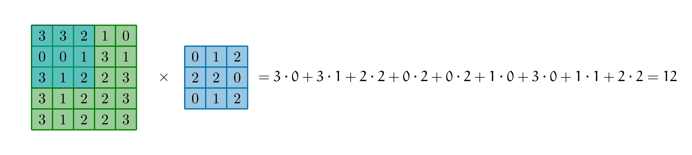 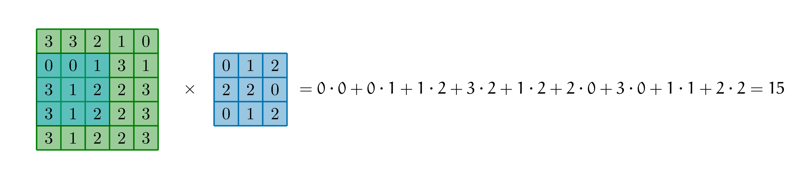 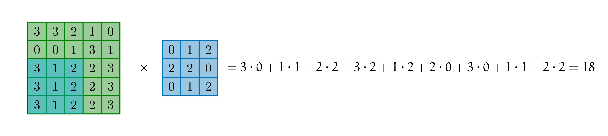 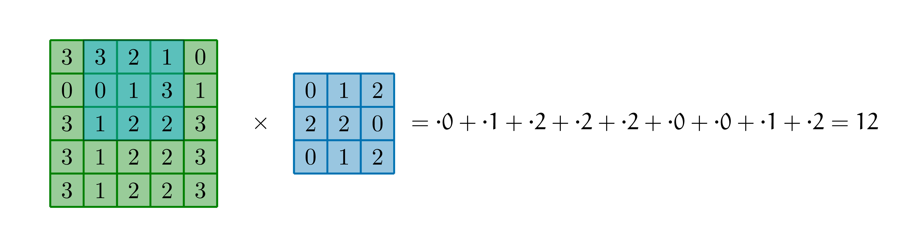 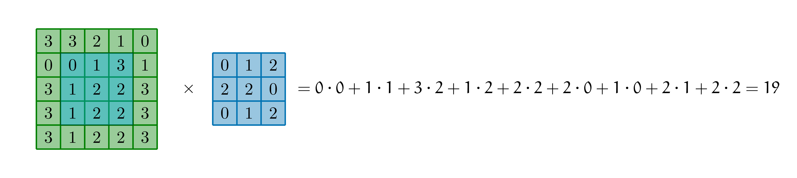 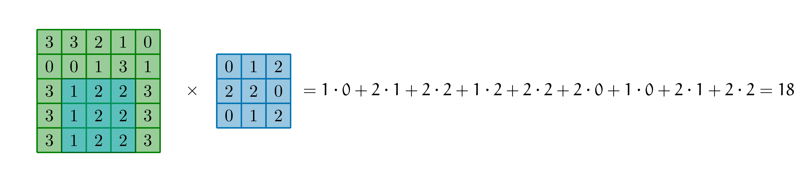 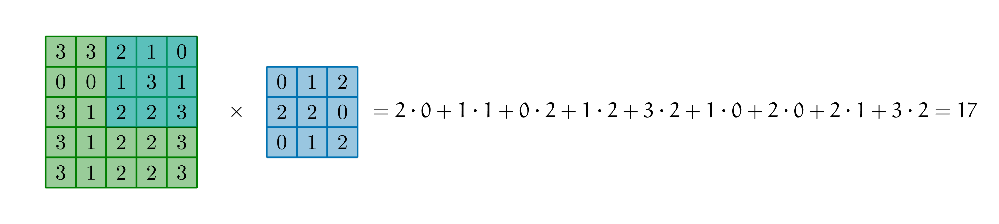 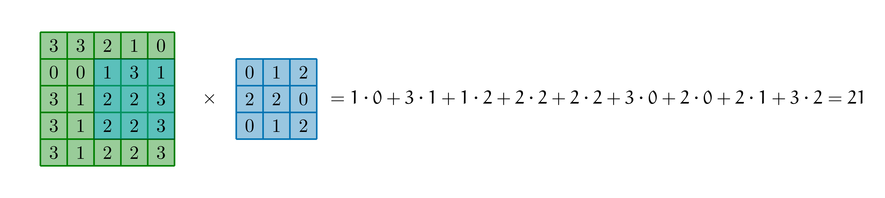 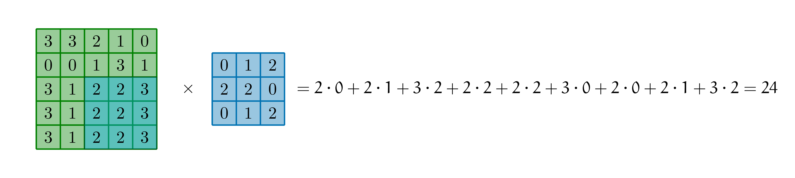{kind=link}
{kind=link}
{kind=link}
{kind=link}
{kind=link}
{kind=link}
{kind=link}
{kind=link}
{kind=link}
Собираем получившуюся после применения свёртки картинку.
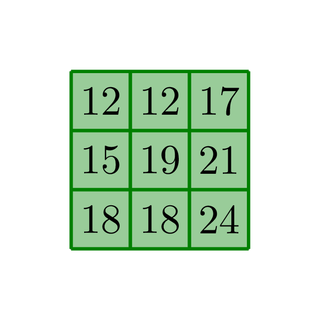{kind=link}
Размерность исходной картинки была \(4 \times 4\). После применения свёртки она уменьшилась до \(3 \times 3\). Это неудобно. Хочется контролировать понижение размерности картинки самостоятельно. Для этого можно дополнить картинку рамкой из нулей. Размер рамки подбирается так, чтобы размерность картинки не упала, Такой приём называется дополнением (padding)
Чтобы уменьшать размерность картинки, используют пулинг. Картинку бьют на квадратики рамзера \(k \times k\), из каждого из них берут максимум или среднее.
Max pooling:
Avg pooling:
б) Примените к исходной картинке свёртку с параметром сдвига (stride) равным \(2\).
Решение
При свёртке можно прикладывать ядро не к каждой клетке. На картинке ниже выделены клетки, к которым мы будем прикладывать ядро свёртки.
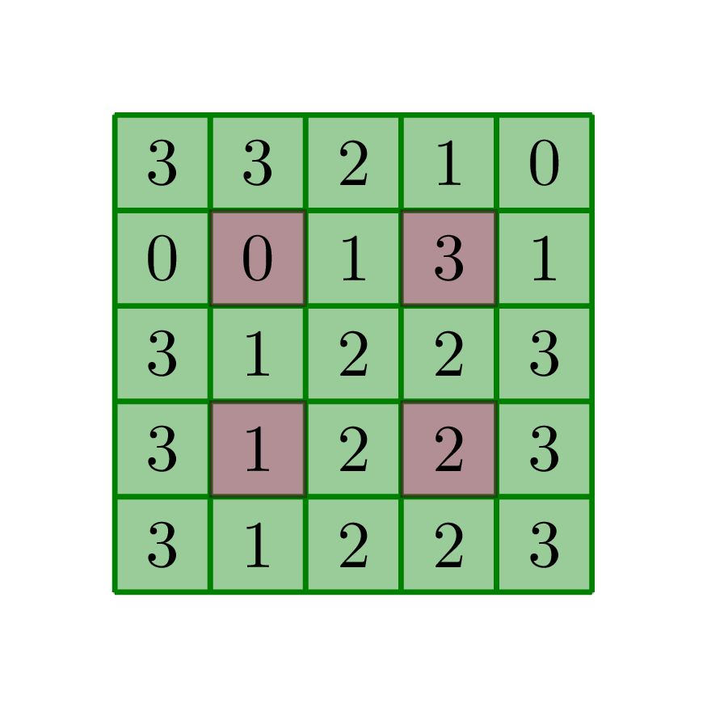{kind=link}
Обратите внимание, что мы делаем сдвиг по обеим осям. Можно делать разные сдвиги по разным осям. Правда не очень ясно, когда это оправдано.
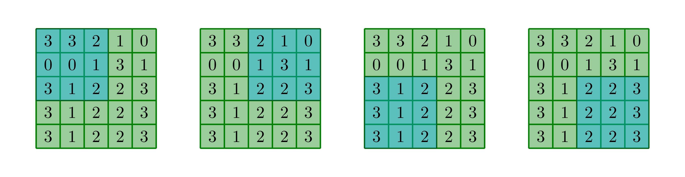{kind=link}
На выходе получим картинку
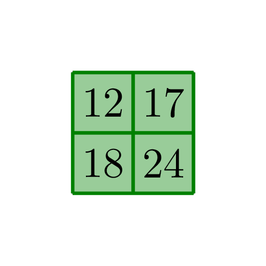{kind=link}
в) Примените к исходной картинке свёртку с дополнением нулями (zero padding) и параметром сдвига (stride) равным \(1\).
Решение
Нам надо сделать вокруг картинки каёмку из нулей и применить свёртку с её учётом. Благодаря этому, размерность исходного изображения не упадёт и мы сможем более аккуратно контролировать изменение её размеров. Проиллюстрируем первые два шага такой свёртки. К остальным клеткам применение будет делаться аналогично. Параметр сдвига, равный единице, означает, что мы прикладываем ядро к каждой из клеток.
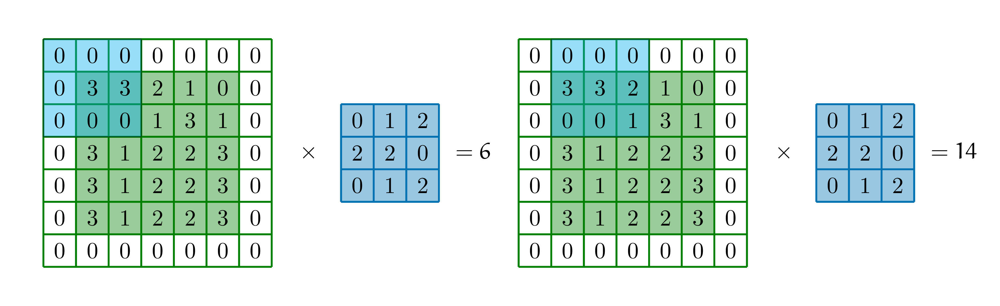{kind=link}
г) Сделайте расширенную свёртку (dilated convolutioon) с параметром расширения равным \(2\) (dilation factor). Сравните такую свёртку с обычной свёрткой со сдвигом. Эквивалентны ли они?
Решение
Нам надо сделать расширенную свёртку (dilated convolution) с параметром расширения равным \(2\).

Смысл этой свёртки в том, что соседние пиксели картинки очень похожи. Нет смысла смотреть на два соседних пикселя, так как в них будет одна и та же информация. Давайте накладывать свёртку на картинку более разряжено. Это поможет быстрее нарастить поле обзора (receptive field). В свёртках со сдвигом похожая идея, но вместо того, чтобы делать свёртку более разреженной, мы быстрее двигаемся по картинке.